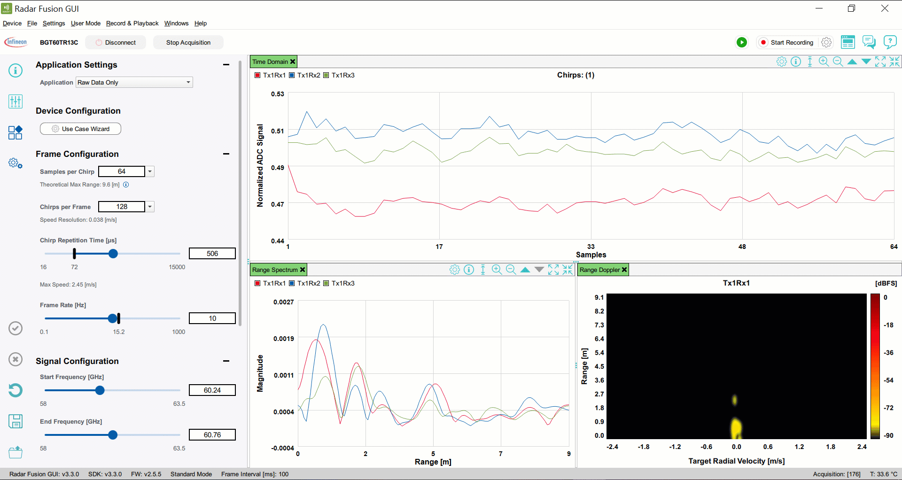

按下容易出现抖动,也程序误以为按下开关,所以要避免Debounce
请求转发只有一次请求，请求重定向有两次请求。
RequestFrowardServlet
ResaultServlet
配置文件放src下
在线路上串联上一个电阻,防止过载
vim /etc/ssh/sshd_config
模型
窗口事件监听
静态代理
xxx.img
win32disk
init = /bin/sh
ctrl+x
mount -o remount,rw /
passwd
套娃
不能无尽的套娃
1642.xml
ccsdebug.js
通信协议就像是信封上（数据包内）约定好的地址（通信）格式，按照指定的格式填写信息就能将信件准确的送达到你想送达的地址，否则邮递员（计算机）无法识别。
TCP/IP协议簇
IOC（Inversion of Control）:
非sysTicks
模仿网易严选
将区域加上滚动条,和文本域
java的注解原理
不设置【可能】会出现乱码情况
不设置会出现 ‘’？？？？？？’ 中文变【问号】情况
在方法前加上 synchronized 同步方法,锁的是this [同步方法]
没有控制的并发会导致数据的不一致
sshd
PermitRootLogin
如果有任意一方没有满足,则视为事务终止=没做
esp8266 nodeMCU上的LED灯为反向空控制
输入高电平为熄灭,输入低电平为点亮
客户端
①在点击重启的同时点击键盘上的shift按键
②选择系统还原
*.exe
package_demo
.exe
选择对应版本的Tomcat
Dash to dock
user theams
system分区没有修改权限大概率是没有remount
默认级别cookie（浏览器关闭就会消失）
不是一定被礼让的先执行
linux资源库
只添加一个响应数据
服务器端
icon可以放在标签上也可以放在按钮上,但是 大多数情况是放的图片
C:\Users\z\AppData\Roaming\JetBrains
StringBuffer是一个可边长的字符串
StringBuilder
DNS及(DNS辅助区详细创建)
注意start() 和run()的区别
1' or
or '1'='1
单选框记得分组,要不然不是只能选一个
复选框可以选多个
键盘监听
远程开关
注意动态写入和静态写入
静态ip配置如下
object对象没有办法使用String中的CompareTo(),会报错,
treeSet中没有滴定仪Comparator,会默认使用String中的
量
通过监听鼠标位置,实现点击画点
依次获取资源, 一个目标不能同时拿到两个把锁
LED在GPIOB的第5引脚
条件时的控制块
单独
多个
esp8266 nodemcu 采用板子上的5v(VU)供电,尽量避免使用5v供电上的GND引脚.
注意JFrame中的容器
pom.xml文件
文本框,密码框,文本域
执行结果
1580 0001
发送并接收键盘输入, 并渲染处理后的结果
执行终端发送过来的命令, 并把结果返回给终端.
模拟终端键盘输入发送给shell,渲染返回结果
vim /ect/sudoers
c
C++